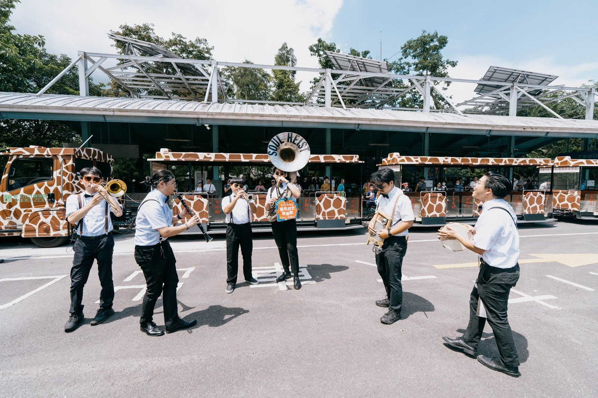

演出團隊 / ARTIST PROFILE
盜魂爵樂團
1/17（日）15:30–16:20
紐奧良銅管 × 放克

ABOUT THE TEAM
把自己的聲音，
帶進這個午後。
盜魂由爵士蘇沙號演奏家鐘凱傑於 2022 年創立，以爵士樂發源地紐奧良盛行的銅管樂器編制，致力於推動爵士樂文化。
盜魂的音樂風格以早期爵士、搖擺風格為核心，也融合流行、拉丁、放克等音樂風格。銅管編制不僅擅長遊行演奏，在戶外以及室內都能有極好的表現；透過音樂將聽眾與爵士重新組合與連結，創造屬於臺灣的爵士樂靈魂。
HIGHLIGHTS
- 2022 國家兩廳院爵士音樂節
- 2024 Sappho Live Jazz 定期演出
- 台北爵士音樂節「感覺樂現場」爵代新聲優選團隊
- 台中爵士音樂節「爵巡演」
- 與臺北捷運及臺北爵士樂團合作「北捷爵快線快閃 Jazz on Track」
團隊精神 / SOUL HEIST
「盜魂 Soul Heist」的「魂」代表的是紐奧良的文化與靈魂，而盜魂透過音樂演奏，將聽眾與音樂重新組合與連結，創造屬於臺灣人的音樂靈魂。